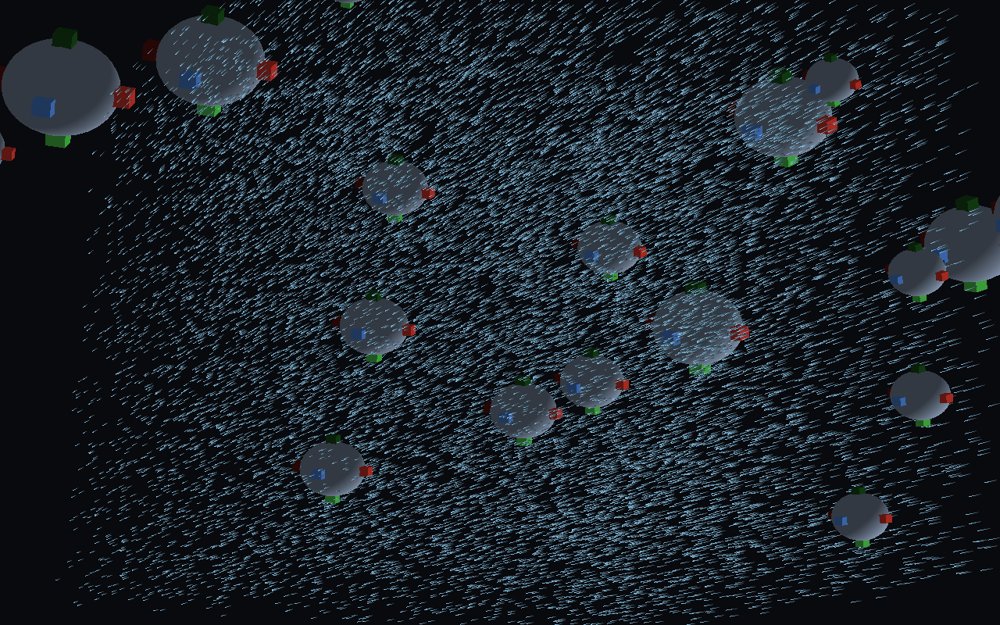

A GPU digital twin of finite-size particles moving in a fluid, with a neural surrogate standing in for the resolved near-field flow.

Each particle is treated as a finite body, not a point. Its motion follows from the forces and torques on its surface, sampled over a fixed quadrature, and the surrounding flow is carried by tracers that respond to the particle's disturbance rather than only to the background stream. The expensive part - the near-field flow around a particle at a given orientation and spin - is evaluated by a trained surrogate model on the GPU, which is what makes an interactive rate possible at all.
| Quantity | Value |
|---|---|
Particle diameter D | 1.0 |
Kinematic viscosity ν | 0.1 |
Fluid density ρf | 1.0 |
Particle density ρp | 2.0 |
Background flow Umacro | (0, 0, 1) |
| Surface quadrature | LEBEDEV_26 (26 points) |
| Validity contract | Re 1 – 300, |ω| ≤ 3.0 |
| Timestep | 1/60 s |
These are the values recorded in the dataset manifest shipped with the playback, not illustrative numbers.
The live version solves the flow on your GPU using WebGPU compute shaders. There are 126 compute kernels; none of them can run without WebGPU. A browser that exposes no usable WebGPU adapter cannot run the simulation at all - and rather than show you a blank canvas, this site detects that before starting and offers recorded output of the same solver instead.
| Requirement | Notes |
|---|---|
| WebGPU available | navigator.gpu present, and an adapter actually obtainable |
maxStorageBuffersPerShaderStage ≥ 15 | The WebGPU default is 8, so some conformant devices fall short |
maxComputeWorkgroupStorageSize ≥ 32768 | default is 16384 |
maxComputeInvocationsPerWorkgroup ≥ 1024 | default is 256 |
| Large buffer support | 2 GiB buffer and storage-binding size |
If the site still offers the recorded playback after that, this device genuinely cannot provide the GPU capabilities the simulation needs. That is a hardware and driver limit, not something you have configured wrongly.
Particle Digital Twin · WebGPU build. This is a staging preview and is not a final public release.